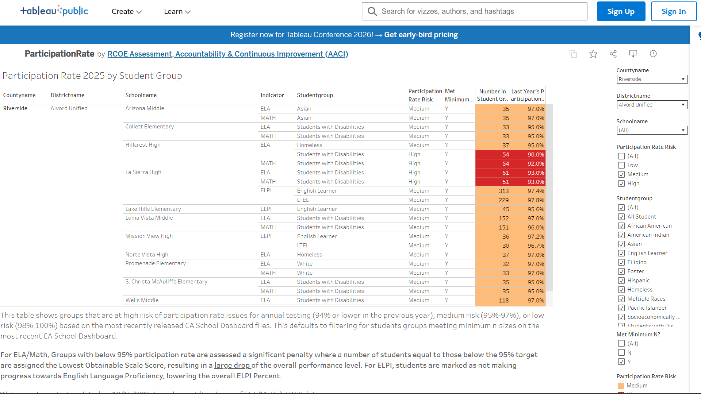
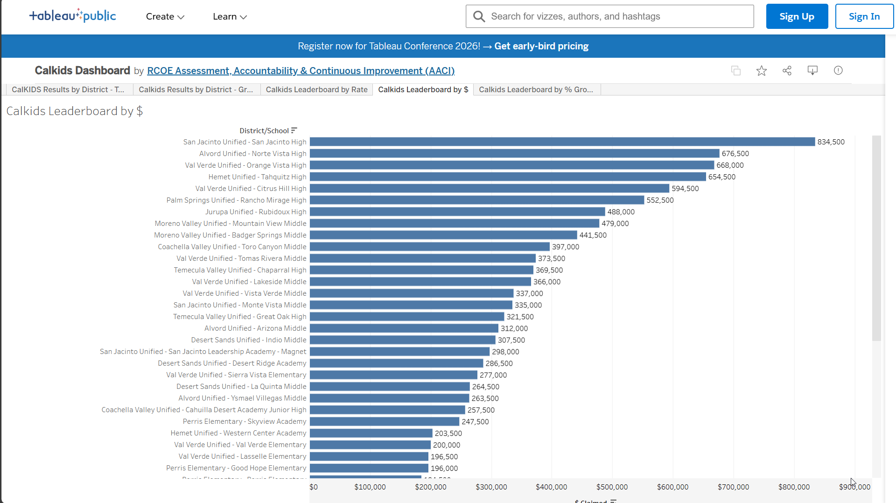
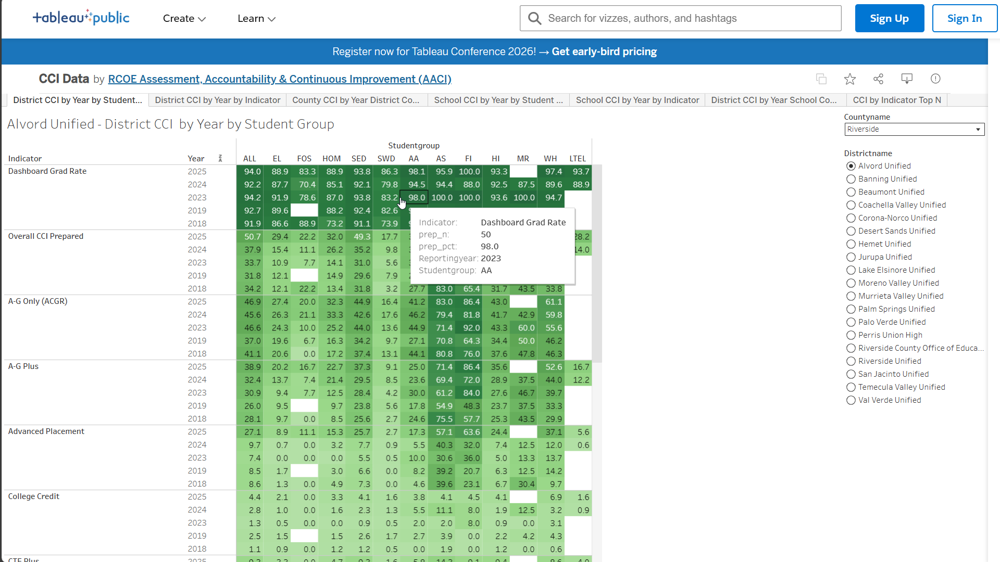
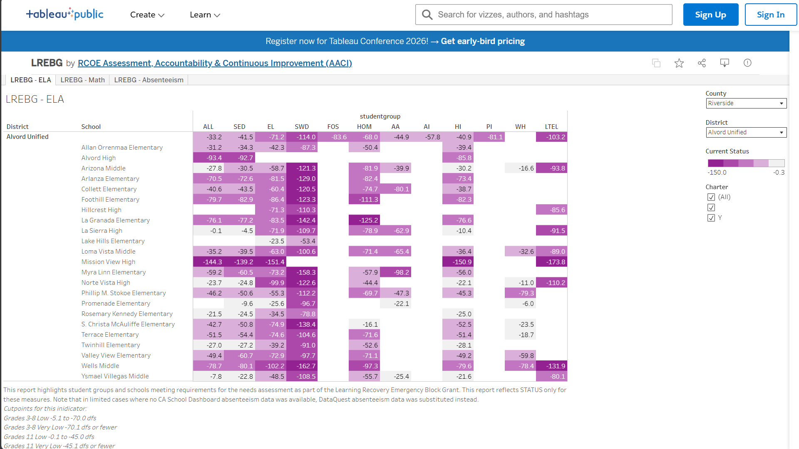
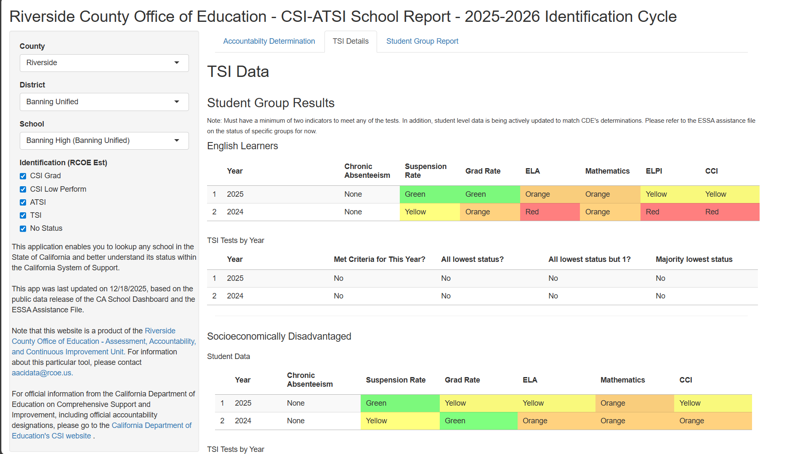

Featured · 2025
CSIS Statewide Data Governance Academy
RCOE's data-collaboration journey — from National Student Clearinghouse partnerships to statewide Dashboard Estimates.
Riverside, California
Ed.D. — Education Leadership & Data Infrastructure
My coworkers and I run student data operations at the Riverside County Office of Education. Twenty-three districts, about 420,000 students, partnerships with CCGI, the National Student Clearinghouse, the CSU system, and the State Treasurer's Office. The day-to-day: building the on-premises warehouse (RHEL 9, Kubernetes, Airflow, dbt, Tableau with row-level security), running the integration pipeline behind CalKIDS, and negotiating the data-sharing agreements that make these projects — and more — work for our schools. In addition, I've developed the systems and processes that make CSU Direct Admissions work for every high school in the county.
I came in through teaching — seven years directing high-school bands, then five running Title I monitoring and district curriculum-and-assessment programs before landing in this office. The same instinct that made me want to corral a hundred high schoolers into straight lines on a football field in Riverside heat now wants to provide structure and order to a fractured data landscape. I have an Ed.D. in Education Leadership and Policy from UCLA; my dissertation looked at how administrator behaviors shape whether teachers actually use the data they're given.
RCOE named me Classified Administrator of the Year in 2024. When I'm not at the office, I might be ferrying kids to soccer while keeping up with the latest hot thing in the modern data stack. Iceberg here I come.

Identifies student groups at risk of participation-rate penalties on annual state assessments.

Monitors college-savings account registration and claiming across 23 districts.

College & Career Indicator trends disaggregated by student group.

Learning Recovery Emergency Block Grant needs assessment for targeted student groups.

Annually updated school-identification tool based on California Dashboard business rules.
RCOE's data-collaboration journey — from National Student Clearinghouse partnerships to statewide Dashboard Estimates.
Co-presented with RCOE, CSU Chancellor's Office, and CalKIDS Institute (UCLA) on building county-led data-sharing partnerships.
Co-presented with CCEE, SDCOE, and SBCSS on a framework for evaluating and selecting data platforms across six decision-making domains.
Panelist alongside San Diego COE and USC Rossier EdPolicy Hub on interoperable data standards and real-time APIs for equity-focused decision-making.
Demonstrated locally-hosted LLMs (Meta-Llama 3) for analyzing student focus-group transcripts while maintaining FERPA compliance.
Co-presented with RCOE on leveraging county-level data sharing within California's System of Support.
Co-presented with RCOE on using transcript analysis and grade-distribution data to identify system-level inequities across Riverside County.
View the full CV for the complete list of presentations and publications →